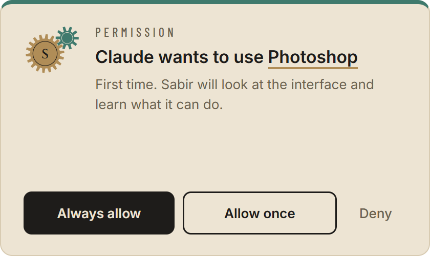
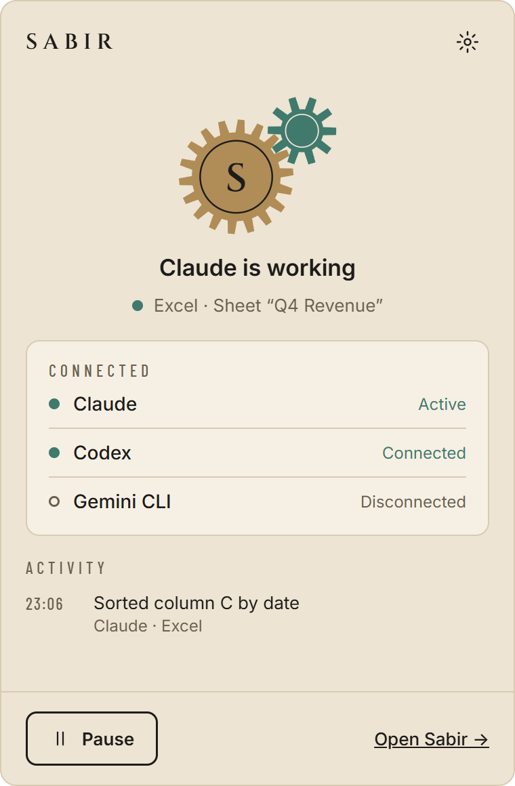
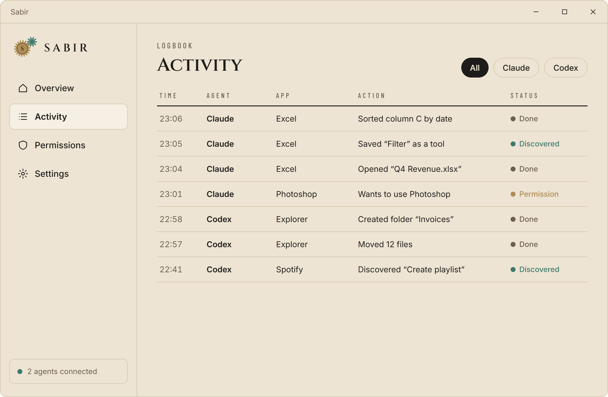
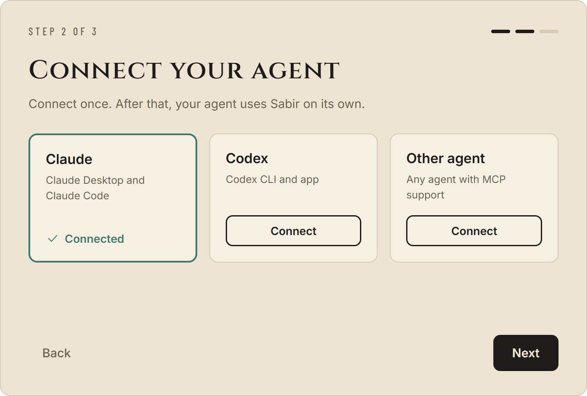

Computer use, without the screenshots. Sabir learns what every Windows app can do and hands it to Claude, Codex, Gemini CLI or any MCP agent as real tools — fast, exact, and with your permission.
to type 12 + 30 = in Calculator and read the result
screenshots — Sabir reads the interface, not pixels
to learn Calculator: 37 functions saved as tools
learned once, reused by every agent you connect
Computer use takes a screenshot, looks at it, guesses where the button is, moves the mouse and clicks — then takes another screenshot. For every single click. Sabir skips all of that.
| Computer use | Sabir | |
|---|---|---|
| Finding a button | Screenshot → look → guess coordinates | Reads the UI tree and clicks the control by its ID |
| Screenshots per step | 1 (≈ 1,365 image tokens at 1280×800) | 0 |
| Your mouse & screen | Taken over while it works | Stay yours — Sabir works in the background |
| Next time | Figures the app out again | Learned once, saved as tools for every agent |
| Safety | Sees everything on screen | Asks once per app, logs every action |

The first time an agent wants an app, Sabir asks you: Always allow, Allow once, or Deny.

It reads the app through Windows UI Automation and saves every button, menu, field and switch as a reusable tool.

Tools like notepad__file_save or calculator__equals appear in your agent over MCP. Every action is logged.
No image tokens, no visual guessing. Sabir talks to the app’s interface directly.
Every click hits the exact control by its automation ID — not a pixel that might have moved.
Sabir works in the background. Keep typing while your agent works in another app.
One MCP server. What Sabir learned for Claude is ready for Codex and Gemini CLI too.
Per-app permissions, a pause button in the tray, and a full activity log on your PC.
Notepad, Calculator, Explorer, Office, internal tools — if Windows can see it, your agent can use it.
The setup writes the MCP config for you. Restart your agent once — done.

Or add it by hand — Sabir runs a local MCP server:
claude mcp add-json --scope user sabir '{"type":"http","url":"http://127.0.0.1:47821/mcp",
"headers":{"Authorization":"Bearer <token from Sabir → Settings → Copy config>"}}'
Yes. Sabir is new and not code-signed yet, so SmartScreen shows a warning. Click “More info” → “Run anyway”. The full source code is on GitHub.
Any app that exposes Windows UI Automation — that includes most classic Windows apps, UWP apps like Calculator, Office and many Electron apps. Apps that draw everything themselves (some games, custom canvases) expose little or nothing.
Yes. Sabir makes each action fast and exact; your agent still decides what to do. The 84 ms above is Sabir’s execution time, not the agent’s total time.
The MCP server only listens on your own PC (127.0.0.1) and needs a secret token. Every agent has to ask you per app, you can pause everything from the tray, and every action is written to a local log.
Nothing. Sabir is free and open source under the MIT license.